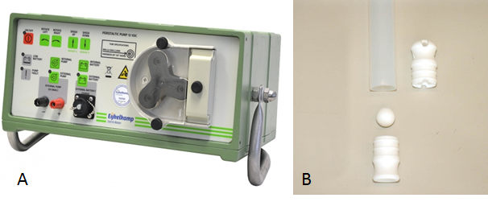
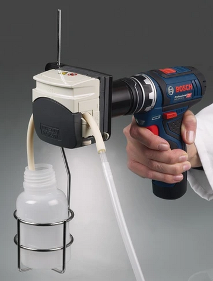

Richtlijnen voor het bemonsteren van peilbuizen
Staalname ondiepe peilbuizen en uitvoeren van veldmetingen
Mathias Wackenier
 0000-0001-6934-9241
0000-0001-6934-9241
Piet De Becker
0000-0002-9686-0472
Toon Van Daele
0000-0002-1362-853X
2023-12-12
Metadata
| reviewers | documentbeheerder | protocolcode | versienummer | taal | thema |
|---|---|---|---|---|---|
| Gerrit Genouw | Mathias Wackenier | sfp-105-nl | 2023.09 | nl | water |
Controleer deze tabel om te zien of een meer recente versie beschikbaar is.
1 Wijzigingen t.o.v. vorige versies
1.1 2023.09
Dit is een eerste versie van het veldprotocol, gebaseerd op de beschrijving in ‘chemische kenmerken Walenbos’ (Huybrechts & De Becker, 1997), literatuurgegevens (VITO, 2013) en de kennis van de medewerkers van het INBO.
Deze versie is een omzetting van SVP-105 revisie 0.1 op datum van 2017-08-28 naar het nieuwe systeem van versiebeheer van protocollen via Git en GitHub.
2 Afhankelijkheden
| Protocolcode | Versienummer | params | Opgenomen als subprotocol |
|---|---|---|---|
| sfp-104-nl | 2023.07 | NA | FALSE |
3 Onderwerp
3.1 Definities en afkortingen
Peilbuis: een peilbuis met in het ondergrondse deel een filterelement over de hele lengte voor het meten van de grondwaterstand nabij het maaiveld. Grondwater kan over de volledige ondergrondse lengte van het instrument door perforaties naar binnen en naar buiten stromen. De filter snijdt steeds met de grondwaterstand, behalve als het grondwaterpeil boven het maaiveld uitstijgt. Het waterpeil in de buis wijkt weinig of niet af van de grondwaterstand. Strikt gezien moet dit een grondwaterstandsbuis noemen, maar de term peilbuis is zodanig algemeen in gebruik dat het gebruiken van een nieuwe term tot nog veel meer verwarring zou leiden.
Piëzometer: een buis met een filterelement van enkele tientallen centimeter (de INBO afspraak is 50 cm) voor het meten van de stijghoogte (of ook drukhoogte) op een bepaalde diepte. Het peil in de buis komt overeen met de druk ter hoogte van de filter en die kan verschillen van het grondwaterpeil. De stijghoogte is de resultante van de hydraulische druk die ter hoogte van de filter in de ondergrond heerst. De stijghoogte kan hoger, gelijk of lager zijn dan de grondwaterstand. Op het INBO worden vrijwel uitsluitend piëzometers geplaatst. Bij de analyse van de chemische samenstelling heeft een piëzometer minder risico op invloed van insijpelend regenwater. Bovendien wijkt de hydrostatische druk in de meeste gevallen niet of nauwelijks af van het grondwaterpeil als de piëzometer “kort” is (doorgaans < 2-3 meter)
HDPE: High-density polyethylene
Staal of monster: Een portie die geselecteerd wordt uit een grotere hoeveelheid. In dit protocol bestaat het staal steeds uit een hoeveelheid water dat uit een piëzometer of peilbuis werd opgepompt.
3.2 Doelstelling en toepassingsgebied
Deze procedure richt zich op het nemen van een grondwatermonster voor chemische analyse uit relatief ondiepe piëzometers (maximaal 5 m) met een beperkte diameter (meestal 5 cm) voor het bepalen van de zuurtegraad (pH), geleidbaarheid (EC) in het veld en de analyse van chemische variabelen (anionen, kationen, metalen, alkaliniteit, …) van grondwater.
De procedure is geschikt voor het nemen van een grondwatermonsters voor het bepalen van macro-ionen in het kader van een eco-hydrologisch onderzoek. Voor de analyse van verontreinigende stoffen zijn aangepaste procedures vereist (zie VITO, 2013).
4 Beperkingen van het protocol
De bemonstering moet worden uitgevoerd in een geschikte peilbuis in PVC of HDPE, afhankelijk van de aanwezige stoffen in het grondwater en de te analyseren chemische variabelen
De procedure is niet geschikt voor het bemonsteren van grondwater met een zeer hoge saliniteit.
5 Principe
Het doel is een staal te nemen van ‘vers’ grondwater. Dat betekent dat er geen monsters mogen genomen worden van grondwater dat weken of maanden in het meetpunt stil staat. De groei van micro-organismen zorgt er immers voor dat grote hoeveelheden metabolieten in het water accumuleren. Daarom wordt de wand van de piezometer eerst gereinigd en daarna wordt het water uit de piezometer weggepompt.
Het bemonsteren van de piëzometer gebeurt 1 tot 3 dagen na het reinigen. Het ‘vers’ grondwater wordt opgepompt. De zuurtegraad (pH) en geleidbaarheid (EC) worden op het terrein gemeten en de recipiënten voor chemische analyse in het laboratorium worden gevuld. Het aantal deelmonsters is afhankelijk van de chemische variabelen die zullen worden gemeten. De richtlijnen voor het nemen en van deelmonsters en het conserveren van de deelmonsters zijn terug te vinden in SOP-005. Deelmonsters voor het bepalen van metalen worden direct na de monstername gefiltreerd (0,20 \(\mu\)m) en aangezuurd met salpeterzuur (HNO3) tot een pH < 2 om neerslagvorming van zouten te vermijden..
Gesuspendeerd materiaal: het bemonsterde grondwater bevat nagenoeg altijd sedimenten in suspensie. Vaak zijn ze niet zichtbaar voor het blote oog. De negatieve lading van de kleimicellen kan gedurende het transport van het staal leiden tot ad-/resorptie van voornamelijk metaalionen. Het aangezuurd staal mag geen gesuspendeerd materiaal bevatten omdat de geadsorbeerde ionen onder invloed van de lagere pH vrij kunnen komen (Huybrechts & De Becker, 1997). wat met gesuspendeerd materiaal bij andere variabelen? We moeten een beslissing nemen of we totaal opgeloste gehalten willen of totaalgehalten inclusief het sediment !
Bij het volledig leegmaken van de piëzometer tijdens het reinigen of de bemonstering komt zuurstof terecht in de buis en kunnen sommige variabelen (vb. Fe, Mn ,…) geoxideerd worden. Van ijzer is gekend dat bij de oxidatie van de gereduceerde vorm (Fe2+) naar de geoxideerde vorm (Fe3+) onoplosbare verbindingen worden gevormd met tegenionen (anionen) in de het grondwater. Op deze manier verdwijnen sommige variabelen uit het grondwatermonster en worden ze niet meer geanalyseerd. Bij de aanwezigheid van ijzer in het grondwater moeten de nodige voorzorgsmaatregelen genomen worden of moet ermee rekening gehouden worden dat sommige anionen worden onderschat.
6 Vereiste competenties
Voor het reinigen en het bemonsteren van peilbuizen of piëzometers moet een opleiding worden gevolgd. Deze opleiding wordt verzorgd door de projectverantwoordelijke(n). Tijdens deze opleiding worden niet alleen de activiteiten voor het nemen van een grondwatermonster verzorgd, maar ook het onderhoud van het materiaal.
Voor het bepalen van de ogenblikkelijke variabelen (pH, EC) moet de opleiding van het analytisch laboratorium worden gevolgd. Naast de theorie bevat deze opleiding een praktisch luik over het gebruik van de veldmeter, de kalibratie van de apparatuur en het onderhoud van de apparatuur. Tevens worden de nodige veiligheidsmaatregelen toegelicht bij het gebruik van sterke zuren.
7 Benodigdheden
7.1 Apparatuur
Geschikt materiaal voor het nemen van een grondwatermonsters uit peilbuis
Peristaltische slangenpomp (Figuur 7.1 A), Eijkelkamp, 12 vdc, regelbaar in twee richtingen tussen de 100 en 2.300 ml/min, met zuigcapaciteit tot 9,5 m diepte. Deze pomp is voorzien van een batterij met levensduur van 4,5 uur en een pompslang in silicone.
Kogelklepmonsternemer, Eijkelkamp, 35mm, 90cm in teflon (Figuur 7.1 B).
Foto A = peristaltische pomp, B = Kogelklepmonsternemer
- Boormachine met peristaltische kop (Figuur 7.2)
Foto Boormachine met peristatltische kop
Veldset voor het bepalen van de zuurtegraad en de geleidbaarheid: het analytische laboratorium beschikt over verschillende veldsets (WTW multi, pH-EC) met de nodige elektroden welke kunnen gebruikt worden op het terrein voor deze bepalingen. De werking, het gebruik, de kalibratie en het onderhoud van deze veldsets wordt beschreven in SIP-054 (kwaliteitshandboek analytisch labo).
Frigobox met koelelementen.
7.2 Materiaal
Ronde borstel (diameter 50mm) voor het reinigen van de piëzometer.
Tubing, teflon, diameter?, voor het ledigen en reinigen van de peilbuizen
Monsternamepot HDPE (minstens 750ml) voor het opvangen van het watermonster en het meten van de ogenblikkelijke variabelen op het terrein.
Recipiënten voor chemische analysen (zie SOP-006). De voornaamste recipiënten gebruikt bij grondwateranalyse zijn:
Fles, 250 ml rode of witte dop (FL-250R of FL250W)
Falcontube, 30 ml met witte dop (FT-30W), aangezuurd met HNO3 (250\(\mu\)l/tube)
Falcontube, 50 ml met rode dop (FT-50R)
Gebundeld in zak van 16x25 cm
Spuit, 100 of 250 ml, met schroefdraad voor spuitfilter
Filter, type spuitfilter, 0,20 \(\mu\)m of 0,45 \(\mu\)m
Gedemineraliseerd water
8 Werkwijze
8.1 Uitvoering
8.1.1 Stappenplan
De werkwijze voor het bemonsteren van een piëzometer voor een grondwatermonsters bestaat uit volgende stappen:
Reinigen van de peilbuis of piëzometer
Bemonsteren van een peilbuis of piëzometer
Bepalen van de ogenblikkelijke variabelen
Vullen van de recipiënten
Bewaren en transporteren van watermonsters
8.1.2 Reinigen van een piëzometer
Voor de staalname wordt de piëzometer eerst gereinigd met een borstel en daarna leeggepompt.
De piëzometer wordt eerst geschuurd met een flessenborstel gemonteerd op een lange steel. Na het inbrengen van die flessenborstel in de buis, wordt flink op en neer bewogen over de gehele lengte van de buis, om vastzittende bacterie-kolonies en andere contaminanten van de buis los te schuren en eventueel gesedimenteerd materiaal terug in suspensie te brengen.
Daarna wordt (in de mate van het mogelijke) al het water met een peristaltische pomp uit de piëzometer gepompt. De telfondarm wordt volledig tot op de bodem van de peilbuis gebracht. Zo wordt eventueel slib uit de piëzometer afgevoerd. Het pompen zorgt ervoor dat vers grondwater wordt bemonsterd. Bij beperkte watertoevoer (wat bij deze piëzometers doorgaans het geval is) naar de buis zal de piëzometer na enkele minuten leeggepompt zijn. Het opgepompte water wordt minstens twee meter van de locatie van de peilbuis afgevoerd.
8.1.3 Bemonsteren van een peilbuis of piëzometer
Het bemonsteren van een peilbuis gebeurt in een periode van 1 tot 3 dagen na het reinigen van de peilbuis. De bemonstering gebeurt met een peristaltische pomp of kogelklepbemonsteraar.
Bij het nemen van een monster met een peristaltische pomp, wordt een teflondarm tot op een diepte van 10 cm onder het waterpeil van de peilbuis gebracht. De teflondarm wordt verbonden met de peristaltische pomp en het ‘vers’ grondwater wordt met een matige snelheid opgepompt zodat geen gasbellen in het opgepompte water terechtkomen. Er moet absoluut vermeden worden dat de peilbuis leeggepompt wordt tijdens de staalname. Het opgepompte water wordt opgevangen in een recipiënt (monsternamepot) totdat een volume van minstens 500 ml is bereikt. Bij voldoende wateraanvoer in de peilbuis wordt de eerste 100 ml niet opgevangen.
Bij het nemen van een monster met een kogelklepbemonsteraar wordt de kogelklep zo diep mogelijk onder het waterpeil gebracht zonder de bodem van de peilbuis te raken. Trek daarna de kogelklep rustig omhoog. Om voldoende staalvolume te bekomen moet vaak meerdere keren bemonsterd worden.
8.1.4 Bepalen van de ogenblikkelijke variabelen
Omdat sommige variabelen veranderingen ondergaan tijdens het transport van het watermonsters naar het laboratorium, worden deze variabelen bij voorkeur op het terrein gemeten. Het betreft de variabelen zuurtegraad (pH) en geleidbaarheid (EC). Het bepalen van deze variabelen gebeurt met een veldmeter. Het gebruik van de veldmeter (met elektroden) is beschreven in SIP-054 en in de veldset bevindt zich tevens een beperkte handleiding.
Vooraleer de metingen uit te voeren moet de apparatuur voor zuurtegraad (pH) en geleidbaarheid (EC) gecontroleerd worden op een goede werking. De controle oplossingen bevinden zich in de veldset. De veldmeter wordt door het analytisch laboratorium gekalibreerd geleverd, maar bij regelmatig gebruik moet de apparatuur minstens voor en na een reeks van metingen gecontroleerd worden.
Controleer de pH-elektrode met bufferoplossing van pH=5
Controleer de EC-elektrode met een oplossing van 1413 \(\mu\)S/cm
De waarden waarbinnen de controle moet vallen staan vermeld op het veldformulier. Indien de controle niet wordt aanvaard, dan moeten corrigerende maatregelen genomen worden. Deze bestaan o.a. uit de verificatie van de controle, verificatie van de controle oplossing en indien nodig herkalibratie van de apparatuur. De oplossingen voor herkalibratie bevinden zich in de veldset. Indien de controle wordt aanvaard, dan kunnen de analyses op het terrein uitgevoerd worden.
Een deelmonster van het verzamelde watermonster wordt overgebracht in een meetrecipiënt (HDPE, minstens 250ml) voor het bepalen van de ogenblikkelijke variabelen. Op het deelmonster wordt In eerste fase de geleidbaarheid van het waterstaal bepaald en pas daarna de zuurtegraad. Bij een iets verouderde pH- elektrode bestaat de kans dat deze KCl lekt waardoor de meting van de geleidbaarheid wordt beïnvloed (lees: te hoge waarde).
Bepalen van de geleidbaarheid: de elektrode wordt in het meetrecipiënt gebracht zodanig dat de geleidbaarheidscel volledig ondergedompeld is in de meetvloeistof. Onder licht roeren met de elektrode, wordt de geleidbaarheid afgelezen indien het meetsignaal stabiel is. Een stabiel meetsignaal wordt bekomen met de AR functietoets. De geleidbaarheid wordt afgelezen in \(\mu\)S/cm of mS/cm (opgepast!) en genoteerd op het veldformulier.
Bepalen van de zuurtegraad: de elektrode wordt in het meetrecipiënt gebracht tot dat deze minstens 5 cm volledig ondergedompeld is in de meetvloeistof. Onder licht roeren met de elektrode, wordt de zuurtegraad afgelezen indien het meetsignaal stabiel is. Een stabiel meetsignaal wordt bekomen met de AR functietoets. De zuurtegraad wordt afgelezen in eq/l en genoteerd op het veldformulier.
8.1.5 Recipiënten voor het vullen van de recipiënten
Door het analytisch laboratorium worden de deelrecipiënten voor chemische variabelen aangeleverd. De richtlijnen voor de nodige recipiënten staan beschreven in SOP-006 “klaarzetten materiaal voor staalname watermonsters” van het analytisch labo. De deelrecipiënten worden per staal gebundeld in een plastic zakje. Het aantal deelrecipiënten is afhankelijk van de te meten variabelen. Er wordt aangeraden alle deelrecipiënten volledig te vullen om oxidatie via de headspace te vermijden.
Voor een standaard grondwateranalyse worden de variabelen zuurtegraad, geleidbaarheid, alkaliniteit (carbonaten), anionen (Cl, NO2, NO3, SO4 en PO4), kationen (Na, K, Mg, Ca) en metalen (Fe, Mn, Si, Al) gemeten. Hiervoor dienen volgende recipiënten gevuld te worden:
Fles, 250 ml rode of witte dop: vul het flesje volledig met grondwater en sluit het daarna goed af. Dit deelrecipiënt wordt gebruikt voor het bepalen van de zuurtegraad (pH), geleidbaarheid (EC), alkaliniteit met de titrator en anionen & kationen met IC. De variabelen worden niet geconserveerd, maar worden direct gemeten in het labo bij ontvangst van het monster. In het laboratorium wordt het monster over een 0,20 \(\mu\)m filter gefiltreerd voor analyse.
Falcontube, 30 ml met witte dop: vul het flesje volledig met 0,20 \(\mu\)m (of 0.45 \(\mu\)m?) gefiltreerd grondwater en sluit het daarna goed af. Het deelrecipiënt bevat van 250 \(\mu\)l geconcentreerd salpeterzuur (HNO3) voor het bewaren van de variabelen bij een pH<2. Bij het openen van het recipiënt kunnen zure dampen vrijkomen en moeten de nodige veiligheidsmaatregelen in acht genomen worden (buisje niet te dicht bij de mond houden!). Neem een spuit van 100 ml en zuig de spuit voorzichtig vol met grondwater. Plaats een spuitfilter op de spuit en filter het grondwater in het deelrecipiënt. Indien de filter verstopt, wordt een andere filter op de spuit geplaatst. Dit deelrecipiënt wordt gebruikt voor het bepalen van mineralen en metalen met ICP-AES.
Falcontube, 50 ml met rode dop: vul het flesjes volledig met grondwater en sluit het daarna goed af. Dit deelrecipiënt wordt door het laboratorium ingevroren (-18°C) als reservemonster en 6 maanden bewaard. Wanneer onvoldoende volume staal beschikbaar is, kan dit staal eventueel weggelaten worden.
8.2 Registratie en bewaring van resultaten
De deelmonsters worden zo snel mogelijk na het vullen bewaard in een koelbox met koelelementen. De monsters worden koel getransporteerd om omvormingen te vermijden. Na de bemonstering worden de stalen zo snel mogelijk afgegeven in het analytisch laboratorium voor analyse. In het laboratorium worden de monsters geanalyseerd volgens de voorschriften van bewaarcondities. Deze staan beschreven in de procedure SOP-005 “Richtlijnen voor conserveren van monsters” in het kwaliteitshandboek van het analytisch laboratorium.
De resultaten van de veldmetingen (zuurtegraad, geleidbaarheid) en metadata over de bemonstering worden genoteerd op het veldformulier (zie bijlage). Op het veldformulier staat in de eerste kolom de labocode (labo-ID) van het staal vermeld. Dat is een unieke code van het monster in het LIMS van het laboratorium. Het labo-ID staat ook vermeld op elk deelrecipiënt. Bij het vullen van de deelrecipiënten moet de staalcode (veld-ID) vermeld worden op het veldformulier in de kolom naast het labo-ID. Op deze manier wordt de link gemaakt tussen het veld-ID en labo-ID.
Bij ontvangst van de monsters in het laboratorium wordt het veldformulier volledig ingevuld. Naast de meetresultaten van zuurtegraad en geleidbaarheid wordt ook informatie over de bemonstering (datum, wie) en afgifte van de stalen (datum, wie) genoteerd, alsook metadata over de bemonstering (matrix, aard van het staal, …). Het veldformulier wordt gedeeld op drive onder LABODATA en een volledig ingevuld formulier wordt geïmporteerd in het LIMS van het labo.
Bijkomende informatie over de bemonstering, belangrijk voor de opdrachtgever, wordt genoteerd in een veldboekje. Voor te noteren informatie, zie checklist van de bemonstering (zie bijlage).
9 Kwaliteitszorg
Tijdens de bemonstering en transport van de monster naar het laboratorium moet de nodige aandacht besteed worden aan de bewaarcondities van de variabelen. Chemische oxidatie van variabelen (metalen (Fe2+, Mn2+, ..) stikstofverbindingen (NH4+, NO2-), …) kunnen plaatsvinden doordat extra zuurstof in het monster terechtkomt. Bij de bemonstering moet vermeden worden dat het opgepompte monster zich mengt met lucht (lees: zuurstof), alsook bij het vullen van de recipiënten. Recipiënten worden met een matige snelheid en volledig worden gevuld, zodat geen extra zuurstof in het monster komt en er zich geen headspace bevindt bovenaan het recipiënt. Het transport van de monsters gebeurt bij voorkeur bij een temperatuur lager dan de bemonsteringstemperatuur van het staal.
Na de analysen in het laboratorium wordt een ionenbalans opgemaakt door het sommeren van alle gemeten kationen en het sommeren van alle gemeten anionen. Er afwijking tussen de som van de kationen en anionen kan niet alleen een indicatie zijn van een verkeerde meting, maar ook een indicatie dat anionen zijn neergeslagen tijdens het transport. De metalen (zoals Fe) worden op het terrein geconserveerd voor de meting, maar zijn ook aanwezig in het recipiënt waar de anionen en kationen op worden bepaald. Dit recipiënt kan omwille van de meettechniek niet geconserveerd worden en neerslag van metalen in het recipiënt gaat altijd gepaard met neerslaan van anionen (PO4, SO4, …). Vandaar het belang dat de metingen van anionen direct gestart worden na ontvangst van het monster in het labo.
10 Veiligheid
Het deelrecipiënt voor het bepalen van metalen (falcontube 30 ml met witte dop) bevat van 250 \(\mu\)l geconcentreerd salpeterzuur (HNO3). Bij het openen van het recipiënt kunnen zure dampen vrijkomen en moeten de nodige veiligheidsmaatregelen in acht genomen worden (buisje niet te dicht bij de mond houden!). Vermijd ook contact van het zuur met de huid! Bij ongeval raadpleeg onderstaande H en P zinnen.
Salpeterzuur
H272: Kan brand bevorderen; oxiderend.
H314: Veroorzaakt ernstige brandwonden.
P220: Van kleding/…/brandbare stoffen verwijderd houden/bewaren.
P280: Beschermende handschoenen, kleding, oogbescherming, gelaatsbescherming dragen.
P305+P351+P338: Bij contact met de ogen: voorzichtig afspoelen met water gedurende een aantal minuten; contactlenzen verwijderen, indien mogelijk; blijven spoelen.
P310: Na inslikken: Onmiddellijk een ANTIGIFCENTRUM/arts/… raadplegen.
Referenties
A Checklist met te noteren informatie in het veld
- Project
- Datum
- Monsternemer
- Meetpuntcode
- StaalID / LaboID
- pH
- EC (\(\mu\)S/cm)
- Opmerkingen
- Controlemetingen pH (start & einde)